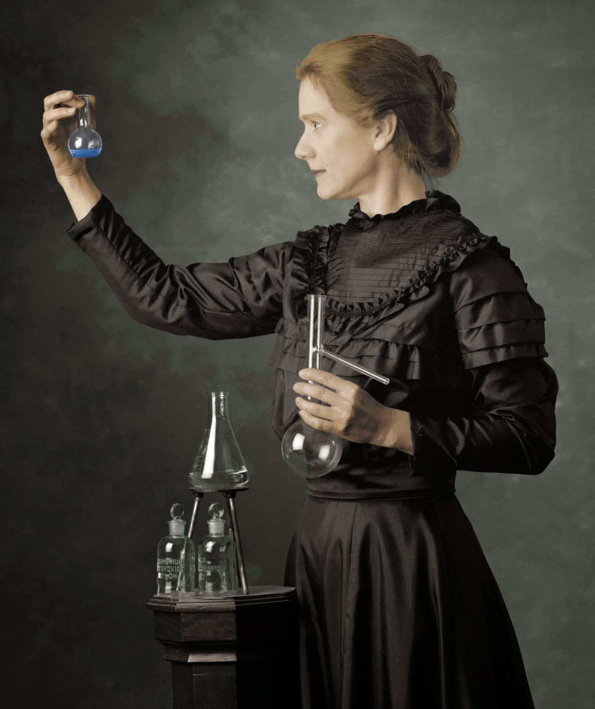

Marie curie and radium.
- November 7, 1867 Marie Curie is born. Marie was born in Poland.
- 1891 Marie moved to Paris. Marie went to Paris to study at Sorbonne.
- 1895 Marie gets married. Marie married Pierre Curie, which was when her name became Marie Curie.
- 1897 Marie becomes a mother Marie's first daughter, Irene, is born.
- 1902 Marie works with radium Marie was hired to do some experiments. While working on them she discovered pure radium.
- 1903 Marie and her husband win a Nobel Prize Marie and her husband, Pierre, were awarded a Nobel Prize for their work with radioactivity.
- 1904 Marie moves up Marie was promoted to the chief assistant to her husband in his laboratory.
- 1904 Pierre becomes a teacher Pierre began teaching at Sorbonne.
- 1906 Marie is widowed Marie's husband, Pierre, was killed in an accident. She took his place teaching at Sorbonne and was the first woman professor there.
- 1911 Another Nobel Prize Marie won her second Nobel Prize, this time on her own, for her continued work in radioactivity.
- 1914 The x-ray is used in battle During WWI, Marie used her radioactive research materials to do "x-rays". The x-rays found bullets and other shrapnel in wounded soldiers.
- 1922 Marie devotes her life to medicine Marie became a member of the French Academy of Medicine. She devoted herself to using her knowledge to help people.
- 1929 Marie Curie visits America Marie was honored everywhere she went, and was given a gram of radium as a gift.
- 1932 She joins the fight against cancer Marie and her sister started a research facility to help fight cancer. It is still opened today and is called the Marie Sklodowska Curie Oncology Center.
- 1934 Marie Curie dies Marie got sick and died shortly after, but she will never be forgotten. Her work helped advance the medical world and save thousands of lives.
If you have time, you should read more about this incredible human being on his
Marie Curie
.